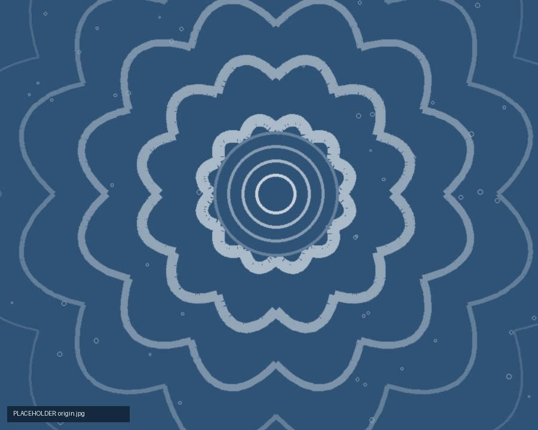
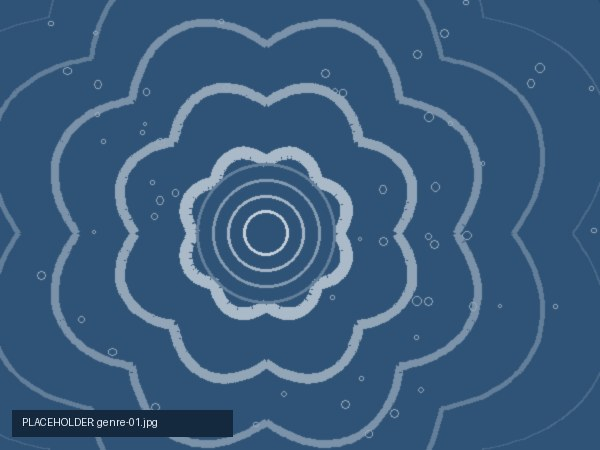
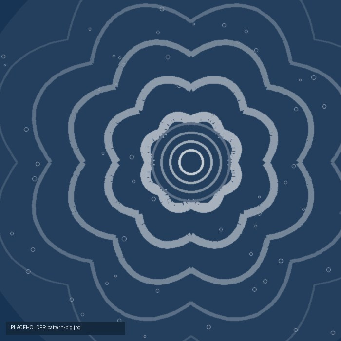

墩头蓝因村而名。在河源市和平县彭寨镇墩头村，客家人世代以耕织传家，把纺纱、织布、蓝靛浸染做成了生活的日常，也做成了手上的功夫。
"敦厚传家"的祖训与"青出于蓝"的匠心，一同织进了这一抹蓝。从一缕棉纱到一匹蓝布，每道工序都讲究慢与稳，成就了墩头蓝温润耐看的品质。
同一片蓝白之间，不同地域孕育出不同的蓝染气质与生活烟火。

技艺发源的核心区。村中至今保留着完整的织染传统，老屋、老缸、老布，是墩头蓝最本来的样子。

技艺沿东江水路传播，河源、惠州一带的蓝染作坊星罗棋布，形成了质朴大方的流域风格。

在闽粤赣客家人聚居的围屋与墟市之间，蓝染衣物与家织布，是客家人勤俭坚韧的生活注脚。

蓝染经典纹样，花团锦簇、圆融有序，寄托圆满与团聚。
扎染纹样源于自然，每一样纹样都融入了劳动与生活的美好想象。